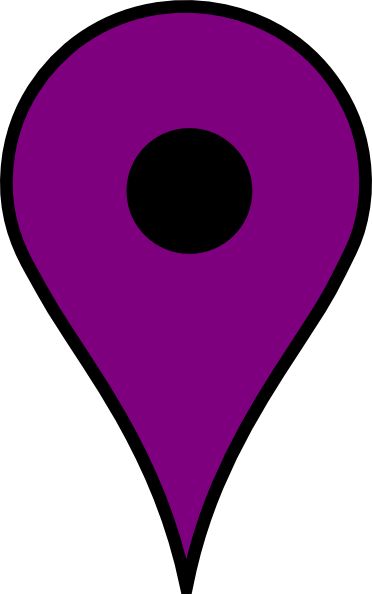

<ng-template #modalDatailMark let-modal>
    <div class="modal-header">
      <h4 class="modal-title" id="modal-basic-title">Criar referência de lugar</h4>
      <button type="button" class="close" aria-label="Close" (click)="modal.dismiss('Cross click')">
        <span aria-hidden="true">&times;</span>
      </button>
    </div>
    <div class="modal-body">
      <!-- <app-place-marker-detail [placeId]="placeId" [coordinateX]="coordinateX" [coordinateY]="coordinateY">
      </app-place-marker-detail> -->
    </div>
  </ng-template>
